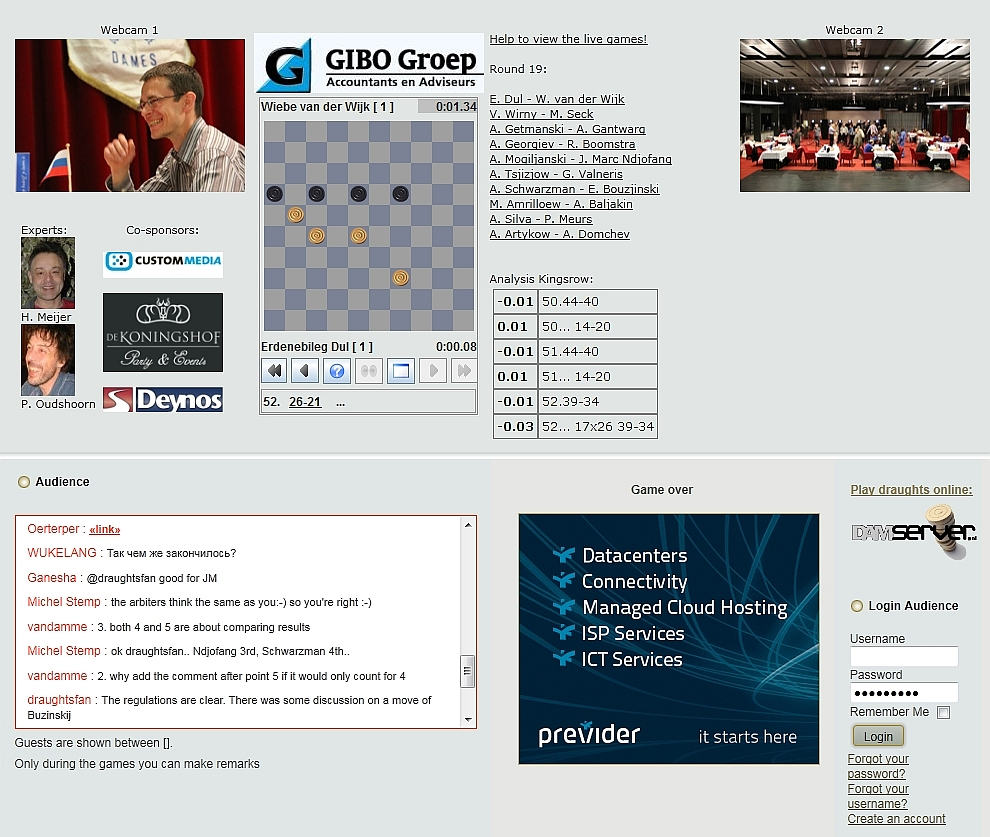

Gibo World Championship Draughts 2011
The Netherlands, Emmeloord and Urk, 7-28 May 2011
Accueil
Live Games
Keuze menu (Java)
Partijen met live analyse
Alle partijen (Java)
Alle partijen (Oerterp)
CM2011
Résultats
Jeux joués
Analyses H. Meyer
Analyses G. Boom
Analyses W. Wesselink
Écouter Dates
Programme
Dans les Nouvelles
Photo/video
Youtube
Foto's
Uitje Noordoost Polder
Open Kampioenschap Flevoland
Ecole Checkers Urk
Ecole Checkers Noordoostpolder
Kloksimultaan Ndjofang
Conférence de presse sur Déc. 16 2009
Information
Les participants
Organisation
Location
Activités extérieures
Simultanée à la pendule Sijbrands
Ecole Checkers Urk
Simultanée à la pendule Ndjofang
Résultats
Parties
Photos
Programme
Règles antidopage
Officiële Toernooi Informatie
Le Jeu de Dames
Champions du monde
Des panneaux électroniques
Computeranalysis technics
L'histoire du Jeu de Dames
Liens
Associations Pays-Bas
Livre d'or
Contact
There are no translations available.
